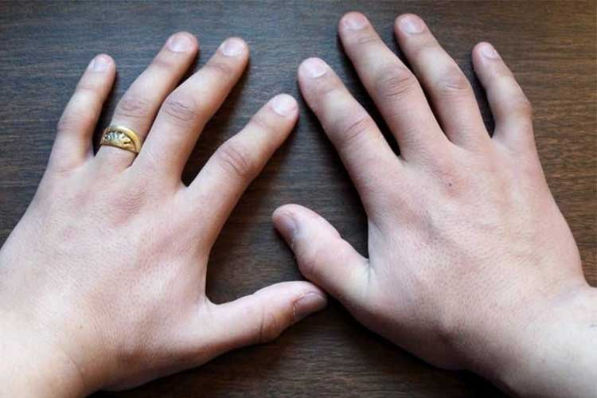
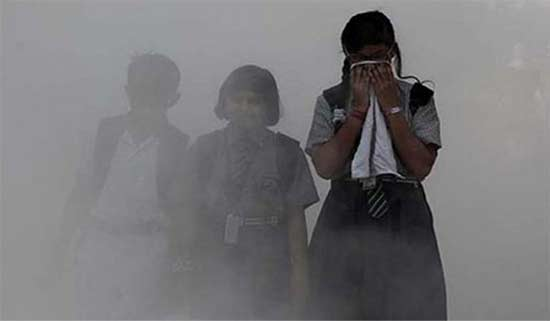

ठंड में हाथ पैर की सूजन से ऐसे बचें
अभी तक सर्दी ने अपना कहर दिखाना शुरू नहीं किया जबकि सर्दी का मौसम शुरू हो गया है। लेकिन जल्द ही जबरदस्त सर्दी पड़ने वाली है। इस तरही की मौसम में चिलब्लेन नाम की बीमारी बच्चों और बुजुर्गों को घेर सकती है। इस मौसम में हाथ और पैर की उंगलियों पर लाल निशान बनने लगते हैं तथा खुजली के साथ सूजन की समस्या आम है। इस बीमारी को चिलब्लेन कहते हैं। इस बीमारी में ज्यादा खुजली के कारण हाथ पैरों में घाव होने की संभावना ज्यादा रहती है। ठंड में नंगे पैर घूमने से यह बीमारी होती है। यह एक कनेक्टिव टिश्यूज डिजीज है। इस कारण ठंड के दिनों में बच्चों और बुजुर्गों को काफी सावधान रहना चाहिए। चिलब्लेन की बीमारी से ऐसे बचा जा सकता है…
सुबह-शाम के समय काम करने के लिए गर्म पानी का इस्तेमाल करें।
घर से बाहर निकलने समय हाथों में दस्ताने और पैरों में जुराब जरूर पहनें।
संभव हो तो ज्यादा से ज्यादा ऊनी व सूती कपड़े पहनने की कोशिश करें।
चिलब्लेन होने पर तुरंत डॉक्टर को दिखाना चाहिए।
सिंकाई करें नमक से
यदि सर्दियों में हाथ पैर में होने वाली सूजन और जलन से बचने के लिए गर्म पानी में सेंधा नमक मिलाकर 10 से 15 मिनट के लिए पैर इसमें रखें। इससे शरीर में मैगनीशियम की पूर्ति होती है और पैर को ड्राइनेस से बचाता है।
तेल और मोमबत्ती का इस्तेमाल करें
ठंड में यदि हाथ पैर की सूजन और लालिमा से बचाव करना है तो मोमबत्ती व सरसों के तेल का मिश्रण बहुत फायदेमंद है। एक कटोरी में सरसों के तेल को गर्म कर उसमें एक मोमबत्ती डालें। फिर इसे जब तक पकाएं तब तक कि मोमबत्ती पूरा पिघलन न जाए। इसके बाद इसे ठंडा कर सूजन वाली जगह पर लगाएं। इसे दिनभर में 2 से 3 बार लगाने से आराम मिलेगा।
गर्म तेल से मालिश करें
सर्दियों में यदि हाथ पैर में सूजन आ गया है तो इससे आराम पाने के लिए एक कटोरी में जैतून या नारियल का तेल लेकर उसे गर्म कर लें। अब इस तेल से जहां पर सूजन है वहां पर मसाज करें। सूजन रहने तक दिन में दो से तीन बार अच्छी तरह से मसाज जरूर करें।

बच्चे का इम्यून सिस्टम कमजोर कर रहा है जहरीली हवा
जहरीली हवा का दिमाग पर असर : वायु प्रदूषण से सांस संबंधी रोग होते हैं, यह सभी को पता है लेकिन यूनिसेफ की एक हालिया रिपोर्ट में कहा गया है कि वायु प्रदूषण बच्चों के दिमाग को हमेशा के लिए नुकसान पहुंचा सकता है। दिल्ली-एनसीआर समेत देश के अधिकांश शहर गंभीर रूप से प्रदूषण से जूझ रहे हैं। आगे की स्लाइड्स में जानें, किस तरह प्रदूषित और जहरीली हवा का बच्चों के मस्तिष्क पर पड़ता है असर…
बच्चे का इम्यून सिस्टम कमजोर होता है : बच्चे का इम्यून सिस्टम यानी प्रतिरक्षा तंत्र और फेफड़े विकसित होने की प्रक्रिया में होते हैं। ऐसे में हर बार सांस लेते वक्त अपने शरीर के वजन के मुताबिक बच्चे, बड़ों की तुलना में ज्यादा हवा अंदर लेते हैं। ऐसे में अगर हवा जहरीली है तो बच्चे बड़ों की तुलना में ज्यादा प्रदूषित हवा अपने शरीर के अंदर लेते हैं।
सीखने की क्षमता होती है प्रभावित : दूसरे तरह के प्रदूषण के कण जैसे- पॉलिसाइक्लिक ऐरॉमैटिक हाइड्रोकार्बन, मस्तिष्क के उन हिस्सों को नुकसान पहुंचा सकते हैं जो न्यूरॉन्स को कम्यूनिकेट करने में मदद करता है। साथ ही मस्तिष्क के उस हिस्से को भी प्रभावित करता है जिसके जरिए बच्चा सीखता है और विकसित होता है।
तेजी से सांस लेते हैं बच्चे : बच्चों के मस्तिष्क पर जहरीली हवा का असर इसलिए भी ज्यादा होता है क्योंकि बड़ो की तुलना में बच्चों के दिमाग को जहरीले केमिकल्स का छोटा सा हिस्सा भी नुकसान पहुंचा सकता है। साथ ही बच्चे, बड़ों की तुलना में ज्यादा तेजी से सांस लेते हैं इसलिए भी ज्यादा प्रदूषित हवा को शरीर के अंदर ले लेते हैं।